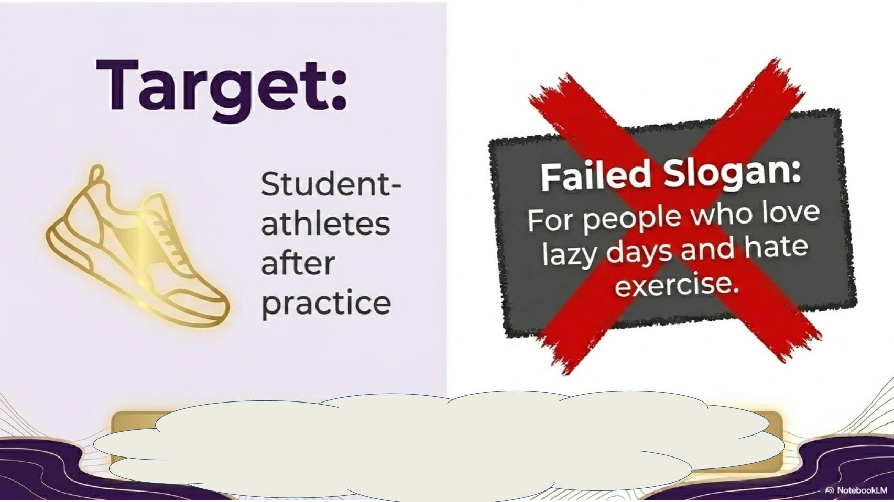
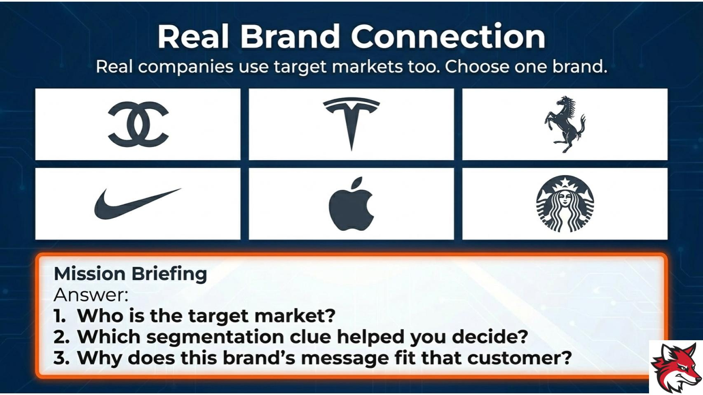
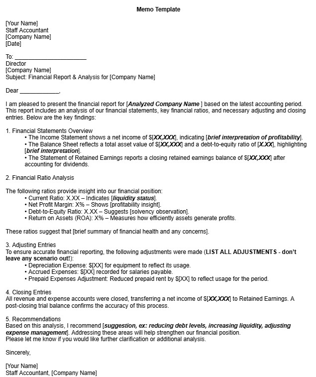
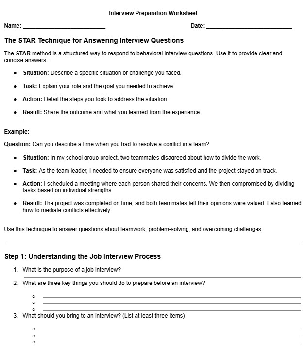

Real World
Business scenarios, financial decisions, brands, and classroom problems that feel current.
Business Education Portfolio
Real World. Student Voice. Career Ready.
3-Minute Screening Video
Teaching Philosophy
Business scenarios, financial decisions, brands, and classroom problems that feel current.
Turn-and-talks, quick checks, and structured discussion that give every student a way in.
Students write, present, analyze, and explain their thinking with professional purpose.
Engagement Example
Students begin with a mismatch, identify the target market, and then connect their reasoning to segmentation clues and real brand strategy.


Classroom Artifacts


Mock Interview
Structured practice for confident student responses.
Open DOCXPersonal Finance
Practical prompts for financial decision-making.
Open DOCXBusiness Strategy
Editable slide activity for planning growth and strategy.
Open PPTXOperations
Applied business operations lesson on inventory choices, systems, and decision-making.
Open PPTXBackground
I bring accounting and tax experience into lessons, then pair it with a coaching approach built on structure, feedback, confidence, and steady improvement.